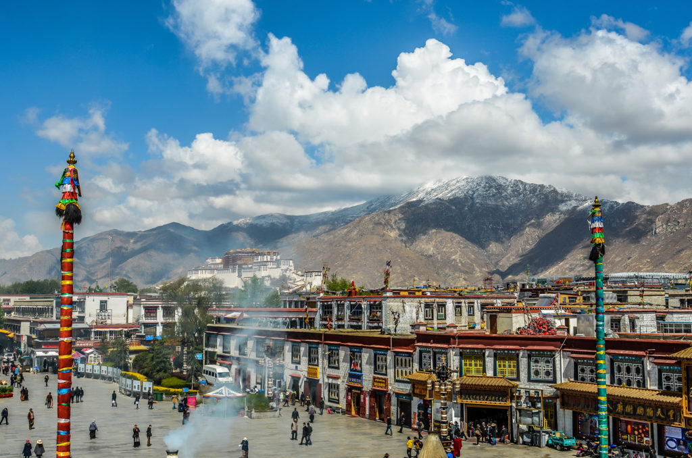

Yumbulagang, perched on a hill in the Yarlung Valley of Tibet, is believed to be the first building ever constructed in Tibet. Built during the 2nd century BCE, it was the palace of Tibet’s first king, Nyatri Tsenpo, who according to tradition, descended from the sky and was chosen by the people to lead.
Nyatri Tsenpo — The first king of Tibet, believed to have descended from the heavens, marking the beginning of Tibetan civilization and the sacred lineage of kings.
Potala Palace — Built in the 7th century and later expanded, the Potala became the political and spiritual heart of Tibet, symbolizing unity, leadership, and the enduring presence of the Dalai Lamas.
Dharamsala — The seat of the Tibetan Government-in-Exile, where His Holiness the Dalai Lama and the diaspora community continue to preserve Tibetan culture, identity, and self-determination beyond the borders of their homeland.
Pema, a 16 year old Tibetan girl who lives in Lhasa, wakes up at the crack of dawn. Excited what the day will bring her; today was her birthday. October 26 1959 wrote on her calander as today. Her amala(mom), Tenzin Sherab, walks in her room with a bowl of desi and some cha. "Happy birthday," she says with her lovey smile. Wrinkles showing as she held the bowl and cup with her two hands. Pema sits up on her bed and takes the brithday breakfast politely, "Thankyou amala," she says with a smile. Because of Pema having no siblings and her dad always working at the farm for money, she got comfort and friendship from her moteher a lot. The cold wind blows from the window to her bed, giving her a good morning. Everything was going well, until they heard yelling from outside, around their farm.

Taken away
She and her mom hears the yelling right away. The language they were speaking wasn't Tibetan, it was chinese. They knew this because there were some Chiese soliders around Tibet, "guarding thier nation,". She and her mother walked fastly outside, worried if something happneded to Tsering Sherab, Pema's dad. They quickned their pace as they heard a familiar voice. As soon as Pema and her mother got outside, they saw some tibetans getting taken away from the Chinese soliders. Screaming in Tibetan and cries from the children filled the air. The look to the right and see a solider talking to Pema's father. Suddenly, Pema's mother walked up and tired talking to the solider to leave the family alone. Pema knew something was going to happen, something wrong. She sees the solider grabbing her mothers collar, yelling Chinese that they couldnt understand. She then sees her mother getting dragged from the collar away from the house, her father runs up to her and tells her to hide and pack right away. She does what he says quickly and runs back in the house and begins packing her stuff. She is confused, not knowing what will happen. Will her family be okay? Was she going to go soon like what her friends told her earlier before they fled? She shakes her head and swings her bag across her shoulder and peeks outside. Her father dissapeard, not at the same spot where he was before. She walks outside very slowly, hoping not to get caught by one of the soliders. Suddenly, she feels a hand on her shoulder and turns around immediatly. It was a woman from her village, the one who always told the stories to keep entertainment. She was old but storng, very wise. She pushes her to a group of other confused kids. "Go, you guys need to follow agu shakya,". All the kids, still confused follow agu right away. Doing what he tells them to do, not knowing what will be ahead of them. It becomes dark and they are still walking away, stoping every moment and then. Her group hears a bang behind them and suddenly, a group of men stars charging towards them. They didnt have the Tibetan army unifrom on, which only meant one thing: they were the chinese soliders. Everyone in her group runs and Pema turns,hiding in a bush. The soldiers dont notice her and focus on trying to get her group and runs after them, everyone leaving Pema behind.
Alone
Pema's tired, she saw her mom getting taken away. Her dad suddenly disappearing, her group just left her behind, and even worse, today was her birthday and this all happened in one day. She's frozen, not knowing what to do and cant see anything from the darkness. ALthough she didnt bring a lamp, she brang one of her grandmothers old map. She opens it and tries to read it with the moons light, still hiding in the bush just in case of any solders coming. A mountain, the mountain that lead to India is just a mile in front of her. She crouches and slowly,carefully, moves along the path to the mountain. After a while of doing this, with breaks in between because of hearing something, she hears a crunch sound under her feet. She looks down and notices snow, she looks up and sees the mountain that was on her map,The Himalayan mountain range. She hears some cries and shouts in tibetan behind her. She gasps and quickly clinbs up the mountain.
Welcome to My Game
The game is about a girl, Pema, who flees Tibet for safety and freedom to India. She passes obstacles such as landslides, dangerous predators, and
This is an adventurous game that will let you pick your own endings
Road to the Present Tibetan Capital Lhasa and Exile
Below are the approximate locations on map. Click and read more
From the sacred heights of Yumbhulhagang in the Yarlung Valley to the grandeur of the Potala Palace in Lhasa, Tibet’s historical journey reflects a profound evolution — from mythic beginnings to a unified kingdom grounded in spiritual leadership and cultural identity. The 7th-century move to Lhasa under King Songtsen Gampo marked a turning point in Tibet’s political and religious life, with the Potala becoming a lasting symbol of that union. Today, as the map traces these historic paths, it also points beyond — to Dharamsala in exile, where the spirit of Tibet continues to thrive through memory, resistance, and renewal.